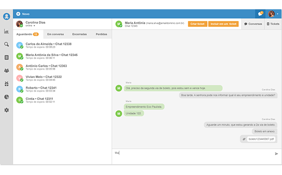
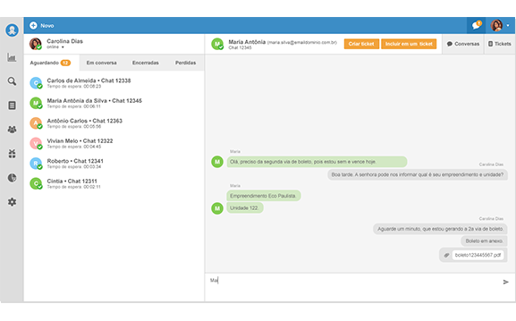

Canais de atendimento
Atenda seus clientes nos múltiplos canais de contato de forma simples, rápida e organizada com nosso sistema de atendimento e Help Desk.
Administre em um único lugar todas as solicitações dos seus clientes independente do canal de contato: telefone, e-mail, chat, formulários web, central de ajuda, base de conhecimento e redes sociais.
- Mantenha todo o histórico de atendimento ao cliente centralizado
- Responda rapidamente independente do canal de contato
- Centralize toda sua comunicação em uma única plataforma
Controle de prazos (SLA)
Tenha clientes mais satisfeitos, gerencie com eficiência o prazo de resolução das solicitações.
Com o SLA do Octadesk fica mais fácil alinhar as expectativas dos prazos de atendimento entre a empresa e seus clientes, gerando menos atrito e ao mesmo tempo aumentando a credibilidade.
- Gerencie melhor suas metas de atendimento ao cliente
- Priorize adequadamente as solicitações dos seus clientes
- Tenha clientes mais satisfeitos, cumpra com os prazos acordados
Automações e workflow
Padronize tarefas rotineiras, ganhe escala em seu atendimento ao cliente e otimize seus processos de trabalho.
Crie regras para executar dinamicamente as tarefas rotineiras de atendimento ao cliente. Gerencie de forma automatizada os processos do seu Help Desk e melhore o trafego de documentos, informações entre departamentos e pessoas.
- Aumente a eficiência da sua equipe e reduza custo
- Otimize seu processo de atendimento ao cliente
- Torne os processos mais eficientes e rastreáveis
Base de conhecimento
Reduza o volume de chamados e antecipe as dúvidas de seus clientes.
Centralize o conhecimento da sua equipe, simplifique a experiência de autoatendimento dos clientes e reduza a quantidade de solicitações para o Help Desk.
- Acessível a qualquer hora e em qualquer lugar
- Ofereça uma experiência de suporte personalizada
- Tenha clientes mais satisfeitos com respostas mais rápidas
Chat
Atendimento ao cliente em tempo real
Gerencie todas as suas conversas em um só lugar. Sua equipe faz atendimentos simultâneos, reduzindo o tempo de espera e aumentando a satisfação de seus clientes.
- Ganhe agilidade de atendimento ao cliente
- Transforme conversas em chamados de maneira integrada com apenas um click
- Dê sequência às conversas importantes transformando-as em chamados
Dashboard e relatórios
Entenda em detalhe sua operação de atendimento ao cliente
Gerencie com eficiência as métricas do seu Help Desk. Cruze as informações dos chamados, monitore os resultados e faça mudanças para tornar seu serviço cada vez melhor.
- Acompanhe os chamados
- Monitore resultados e métricas
- Crie relatórios personalizados apenas arrastando e soltando campos